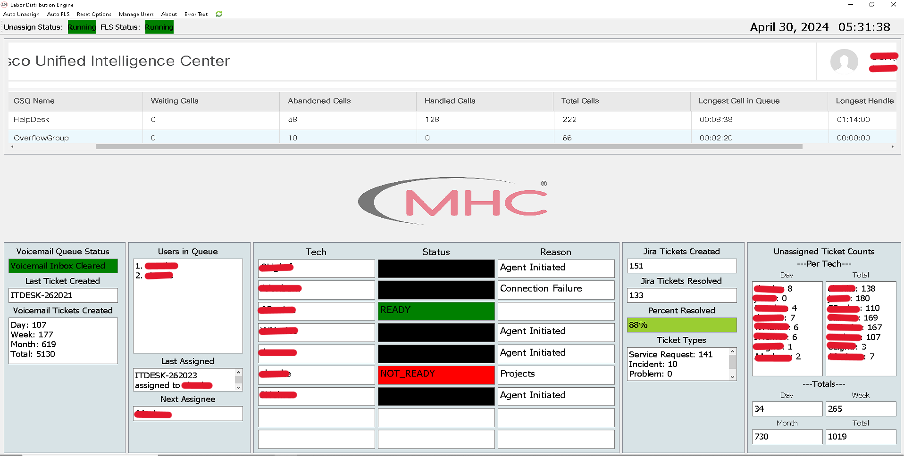
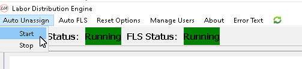
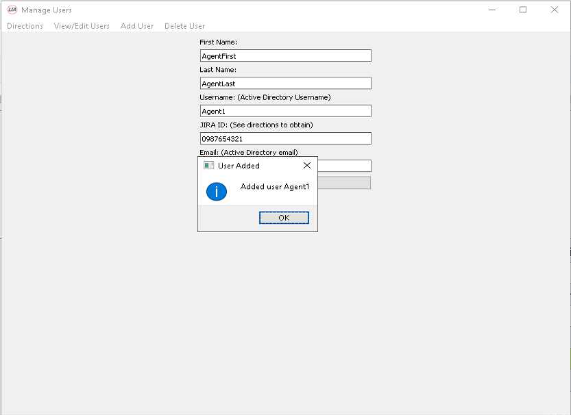

Project Overview
Working in technical support, you do the same things over and over again… a LOT.
There were two things I had to do multiple times a day.
1. Listen to voicemails left in an Outlook inbox from callers and transcribe them into a Jira ticket.
2. Assign out tickets to the team that were opening via email or from the above voicemail process.
On a busy day this could easily be 50+ tickets combined. I was sick of it.
I knew we could do better and that I could create a tool that would automatically do this with no user intervention.
I started reading into Jira’s API. I had no idea what I was doing and was not sure it would even work.
Originally, I had one function written in Python that would simply make a ticket based on information I had manually typed in. This was just the start.
Eventually the program ballooned into a GUI written in TKinter. Which I was really happy with, for about a day.
Tkinter is great for super simple GUI’s but falls short with the sort of features I needed to make this a 100% uptime automation GUI dashboard.
I rewrote the entire program using PyQT for the GUI and LIA (Lemke’s Internal Automation) was born.
A 65” inch TV displays my GUI for our technical support team to view and it has been creating and assigning tickets for over a year now.
Stats and Outcomes
Over the past year LIA has run almost 24/7 creating tickets and assigning them out when a tech is available.
Here are the stats so far:
- Tickets created from emails: 3476
- Tickets created from voicemails: 5130
- Total tickets created and assigned: 8606
- Time saved: 717 hours (based on 5 minutes average to create and assign the ticket)
- Money saved: $14,340 (based on $20 an hour per tech)
- Time to ticket resolution: Reduced from 1 hour 25 minutes to less than 45 minutes.
Example Screenshots
Names censored for privacy
The GUI has a lot of features and takes a lot of screenshots to demonstrate. You can view a full album of screenshots below.
Lia Gallery
This is the main GUI, this is what is displayed 90% of the time.

Start/Stop options for both the auto-assign feature and auto-voicemail creation.

The manage users section allows you to view/add/delete users to the dashboard.

